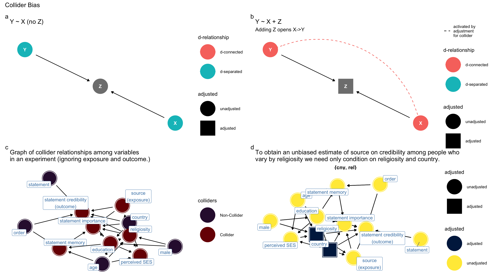
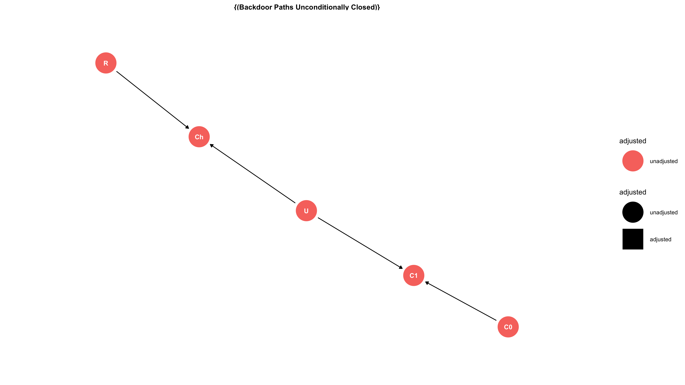
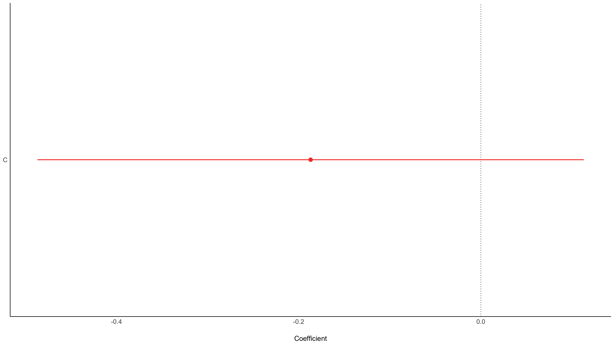
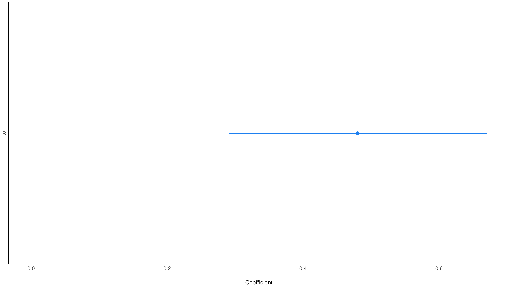

Show code
# packages
# install_rethinking
# function for installing dependencies
ipak <- function(pkg){
new.pkg <- pkg[!(pkg %in% installed.packages()[, "Package"])]
if (length(new.pkg))
install.packages(new.pkg, dependencies = TRUE)
sapply(pkg, require, character.only = TRUE)
}
# usage
packages <- c("coda", "plyr", "mvtnorm", "scales", "dagitty")
ipak(packages)
coda plyr mvtnorm scales dagitty
TRUE TRUE TRUE TRUE TRUE Show code
# next install rethinking
if (!require(rethinking)) {
devtools::install_github("rmcelreath/rethinking")
}
#next install ggdag
if (!require(ggdag)) {
devtools::install_github("malcolmbarrett/ggdag")
}
# installed from previous lectures
library("tidyverse")
library("ggdag")
library("brms")
library("rstan")
library("rstanarm")
library("tidybayes")
library("bayesplot")
library("easystats")
# rstan options
rstan_options(auto_write=TRUE)
options(mc.cores=parallel::detectCores ())
theme_set(theme_classic())
Omitted variable bias
Often when researchers include additional co-variates into their regression into their regression model they are worried about confounding from omitted variable bias.
They use the word control to indicate that they are addressing this hazard. The case is familiar. X and Y are uncorrelated. However a lurking third variable is responsible for their apparent correlation. 1 graphs ommitted variable bias.
Show code
library(ggdag)
theme_set(theme_dag())
# create confounded triangle
d1 <- confounder_triangle() %>%
ggdag_dconnected()
d1
Figure 1: Ommitted variable bias occurs when a third variable, z, causes x and y to share information
We can simulate date that have this causal relationship and ask what would happen were we to regress X on Y without accounting for Z.
Regressing X on Y:
Show code
m0 <- lm(y ~ x, data = df)
parameters::model_parameters(m0)
Parameter | Coefficient | SE | 95% CI | t(98) | p
------------------------------------------------------------------
(Intercept) | 0.13 | 0.11 | [-0.09, 0.35] | 1.18 | 0.241
x | -0.40 | 0.08 | [-0.56, -0.23] | -4.85 | < .001X and Y are correlated. If we know X we can better predict Y. However our ability to predict arises from a process outside of X and Y. Put metaphorically, X listens to Z and Y listens to Z because Z influences both X and Y. If Z were to change, then so too would X and so too would Y. However X does not cause Y. If we were to intervene in the world and change X this would not change Y. Put yet another way, once we know Z, we do not gain any additional information about Y from X.
To understand the implications of information flow with in a regression model we may use directed acylical graphs or DAGS
Directed Acyclical Graphs
A directed acyclical graph (DAG) is a heuristic tools for investigating causal inference in a regression model. A DAG is a graph that has nodes and edges. The edges point in the direction of a causal influence. The flows are acyclical because a cause is not at the same time an effect. The ggdag package in R is useful for identifying potential confounding in your dataset.
Importantly: assessing causal inference using a DAG typically requires assumptions that are not part of your dataset. A poorly specified DAG will lead to poor inference. There is no working around this.
Aside
In the causal inference literature, we evaluate dependencies using the langauge of conditional independence.
Once we condition on Z, the link between X and Y is broken.
Show code
# we can use the language of conditional independence
library(dagitty)
g <- dagitty( "dag{ x <- z -> y }" )
impliedConditionalIndependencies( g )
x _||_ y | zWe can use implied conditional independencies to test whether our DAG is right. For example, if X were to remain reliably predictive of Y, then we would know that the DAG we have drawn here is not correct.
Confounding controls
Many applied scientists equate omitted variable bias with confounding. For this reason, they seek to control for every variable that might be associated with both X and Y. If the relationship between X and Y holds after including such controls, many applied scientist will infer that there is a causal relationship between X and Y. We will see that this is not the case; quite the opposite, controlling for many variables is an invitation to confounding, leading to erroneous causal inference. Do not adopt a causal salad approach to regression.
But the approach which dominates in many parts of biology and the social sciences is instead CAUSAL SALAD. Causal salad means tossing various control variables into a statistical model, observing changes in estimates, and then telling a story about causation. Causal salad seems founded on the notion that only omitted variables can mislead us about causation. But included variables can just as easily confound us. When tossing a causal salad, a model that makes good predictions may still mislead about causation. If we use the model to plan an intervention, it will get everything wrong. Richard McElreath Statistical Rethinking Chapter 1, p46.
Omitted variable DAG
Lets use ggdag to identify confounding arising from omitting Z in our regression of X on Y.
First we write out the DAG as follows:
Show code
# code for creating a DAG
ggdag_ov <- dagify(y ~ z,
x ~ z,
exposure = "x",
outcome = "y") %>%
tidy_dagitty(layout = "tree")
# plot the DAG
ggdag_ov %>%
ggdag()
Next we ask ggdag which variables we need to include if we are to obtain an unbiased estimate of the outcome from the exposure:
Show code
# use this code
ggdag::ggdag_adjustment_set( ggdag_ov )

The graph tells us to obtain an unbiased estimate of Y on X we must condition on Z.
And indeed, when we included the omitted variable Z in our simulated dateset it breaks the association between X and Y:
Show code
m1 <- lm(y ~ x + z, data = df)
parameters::model_parameters(m1)
Parameter | Coefficient | SE | 95% CI | t(97) | p
-----------------------------------------------------------------
(Intercept) | 0.14 | 0.10 | [-0.06, 0.33] | 1.40 | 0.163
x | 0.02 | 0.10 | [-0.17, 0.22] | 0.24 | 0.810
z | 0.89 | 0.15 | [ 0.60, 1.18] | 6.03 | < .001Mediation and causation
Suppose we were interested in the causal effect of X on Y. We have a direct effect of X on Y as well as an indirect effect of X on Y through M. We use ggdag to draw the DAG:
Show code
dag_1 <- dagify(y ~ x + m,
m ~ x,
exposure = "x",
outcome = "y") %>%
tidy_dagitty(layout = "tree")
dag_1 %>%
ggdag()

What should we condition on if we are interested in the causal effect of changes in X on changes in Y?
We can pose the question to ggdag:
Show code
# ask ggdag which variables to condition on:
ggdag::ggdag_adjustment_set( dag_1 )

Backdoor Paths Unconditionally Closed means that, assuming the DAG we have drawn is correct, we may obtain an unbiased estimate of X on Y without including additional variables.
Later we shall understand why this is the case.1
For now, we can enrich our language for causal inference by considering the concept of d-connected and d-separated:
Two variables are d-connected if information flows between them (condional on the graph), and they are d-separated if they are conditionally independent of each other.
Show code
# use this code to examine d-connectedness
ggdag::ggdag_dconnected( dag_1 )

In this case, d-connection is a good thing because we can estimate the causal effect of X on Y. In other cases, d-connection will spoil the model. We have seen this for omitted variable bias. X and Y are d-separated conditional on Z, and thats our motivation for including Z! These concepts are tricky, but they get easier with practice.
To add some grit to our exploration of mediation lets simulate data that are consistent with our mediation DAG
First we ask, is X is related to Y?
Show code
m2 <- lm(y ~ x_s, data = df2)
parameters::model_parameters(m2)
Parameter | Coefficient | SE | 95% CI | t(98) | p
-----------------------------------------------------------------
(Intercept) | 0.19 | 0.14 | [-0.08, 0.47] | 1.41 | 0.161
x s | 1.66 | 0.14 | [ 1.38, 1.93] | 12.00 | < .001Yes.
Next we ask, Is X related to Y conditional on M?
Show code
m2 <- lm(y ~ x_s + m_s, data = df2)
parameters::model_parameters(m2)
Parameter | Coefficient | SE | 95% CI | t(97) | p
----------------------------------------------------------------
(Intercept) | 0.19 | 0.10 | [0.00, 0.38] | 2.04 | 0.044
x s | 0.77 | 0.13 | [0.51, 1.02] | 6.00 | < .001
m s | 1.33 | 0.13 | [1.07, 1.58] | 10.34 | < .001Yes, but notice this is a different question. The effect of X is attenuated because M contributes to the causal effect of Y.
A mediation model would tell us the same. Using the BRMS package in R, we can write mediation model as follows:
Show code
path_m <- brms::bf(m_s ~ x_s)
path_y <- brms::bf(y ~ x_s + m_s)
m1 <- brms::brm(
path_m + path_y + set_rescor(FALSE),
data = df2,
file = here::here("models", "mediation-lect11-1")
)
parameters::model_parameters(m1)
# Fixed effects ms
Parameter | Median | 95% CI | pd | Rhat | ESS
-----------------------------------------------------------------
(Intercept) | 8.70e-04 | [-0.14, 0.15] | 50.32% | 1.000 | 4869.00
x_s | 0.67 | [ 0.50, 0.81] | 100% | 1.000 | 5672.00
# Fixed effects sigma ms
Parameter | Median | 95% CI | pd | Rhat | ESS
----------------------------------------------------------
sigma | 0.76 | [0.65, 0.87] | 100% | 1.000 | 5393.00
# Fixed effects y
Parameter | Median | 95% CI | pd | Rhat | ESS
---------------------------------------------------------------
(Intercept) | 0.19 | [ 0.00, 0.39] | 97.60% | 0.999 | 5134.00
x_s | 0.77 | [ 0.51, 1.04] | 100% | 1.000 | 3567.00
m_s | 1.33 | [ 1.07, 1.58] | 100% | 0.999 | 3585.00
# Fixed effects sigma y
Parameter | Median | 95% CI | pd | Rhat | ESS
----------------------------------------------------------
sigma | 0.96 | [0.84, 1.11] | 100% | 1.000 | 5112.00Recalling:
Show code
bmlm::mlm_path_plot(xlab = "Focal\n(X)",
mlab = "Mediator\n(M)",
ylab = "Outcome\n(Y)")

For a mediation model we may recover the indirect, direct and total effects as follow:
Show code
# get posterior distributions
post <- brms::posterior_samples(m1)
# sum and multiply the posterior distributions to obain parameter estimates
post2 <- post %>%
transmute(
a = b_ms_x_s ,
b = b_y_m_s,
cp = b_y_x_s,
me = a * b,
c = cp + me#,
# pme = me / c
)
# plot the results
mcmc_intervals(post2)

So we can ask how X affects Y in relation to Xs effect on M.
However, to obtain an unbiased causal estimate of X on Y we only needed to include X We didnt need to condition on M to estimate the causal effect of X.
Pipe confounding (full mediation)
Suppose we are interested in the effect of x on y, in a scenario when m fully mediates the relationship of x on y.
Show code
mediation_triangle(
x = NULL,
y = NULL,
m = NULL,
x_y_associated = FALSE
) %>%
ggdag()
What variables do we need to include to obtain an unbiased estimate of X on Y?
Lets fill out this example out by imagining an experiment.
Suppose we want to know whether a ritual action condition (X) influences charity (Y). We have good reason to assume the effect of X on Y happens entirely through perceived social cohesion (M):
X\(\to\)M\(\to\)Z or ritual \(\to\) social cohesion \(\to\) charity
Lets simulate some data
Show code
set.seed(123)
# Participants
N <-100
# initial charitable giving
c0 <- rnorm(N ,10 ,2)
# assign treatments and simulate charitable giving and increase in social cohesion
ritual <- rep( 0:1 , each = N/2 )
cohesion <- ritual * rnorm(N,.5,.2)
# increase in charity
c1 <- c0 + ritual * cohesion
# dataframe
d <- data.frame( c0 = c0 ,
c1=c1 ,
ritual = ritual ,
cohesion = cohesion )
# this code is handy from the rethinking package
rethinking::precis(d)
mean sd 5.5% 94.5%
c0 10.1808118 1.8256318 7.509343 13.0941897
c1 10.4346925 1.8494557 7.607934 13.3788824
ritual 0.5000000 0.5025189 0.000000 1.0000000
cohesion 0.2538807 0.2868199 0.000000 0.7038016
histogram
c0
c1
ritual
cohesion Does the ritual increase charity?
If we only include the ritual condition in the model, we find that ritual condition reliable predicts increases in charitable giving:
Show code
parameters::model_parameters(
lm(c1 ~ c0 + ritual, data = d)
)
Parameter | Coefficient | SE | 95% CI | t(97) | p
----------------------------------------------------------------------
(Intercept) | 0.08 | 0.08 | [-0.07, 0.23] | 1.05 | 0.297
c0 | 0.99 | 7.26e-03 | [ 0.98, 1.01] | 136.74 | < .001
ritual | 0.51 | 0.03 | [ 0.46, 0.56] | 19.33 | < .001Does the ritual increase charity adjusting for levels of social cohesion?
Show code
parameters::model_parameters(
lm(c1 ~ c0 + ritual + cohesion, data = d)
)
Parameter | Coefficient | SE | 95% CI | t(96) | p
-------------------------------------------------------------------------
(Intercept) | -5.68e-15 | 4.21e-16 | [ 0.00, 0.00] | -13.49 | < .001
c0 | 1.00 | 4.06e-17 | [ 1.00, 1.00] | 2.46e+16 | < .001
ritual | 1.78e-16 | 3.23e-16 | [ 0.00, 0.00] | 0.55 | 0.583
cohesion | 1.00 | 5.64e-16 | [ 1.00, 1.00] | 1.77e+15 | < .001The answer is that the (direct) effect of ritual entirely drops out when we include both ritual and social cohesion. Why is this? The answer is that once our model knows m it does not obtain any new information by knowing x.
If we were interested in assessing x\(\to\)y but x were to effect y through m (i.e x\(\to\)m\(\to\)y) then conditioning on m would block the path from x\(\to\)y. Including m leads to Pipe Confounding.
In experiments we should never condition on a post-treatment variable.
Masked relationships
Imagine two variables were to affect an outcome. Both are correlated with each other. One affects the outcome positively and the other affects the outcome negatively. How shall we investigate the causal role of the focal predictor?
Consider two correlated variables that jointly predict Political conservatism (C), religion (R). Imagine that one variable has a positive effect and the other has a negative effect on distress (K6).
First consider this relationship, where conservatism causes religion
Show code
dag_m1 <- dagify(K ~ C + R,
R ~ C,
exposure = "C",
outcome = "K") %>%
tidy_dagitty(layout = "tree")
# graph
dag_m1%>%
ggdag()

We can simulate the data:
Show code
# C -> K <- R
# C -> R
set.seed(123)
n <- 100
C <- rnorm( n )
R <- rnorm( n , C )
K <- rnorm( n , R - C )
d_sim <- data.frame(K=K,R=R,C=C)
First we only condition on conservatism
Show code
ms1 <- parameters::model_parameters(
lm(K ~ C, data = d_sim)
)
plot(ms1)
Show code
ms1
Parameter | Coefficient | SE | 95% CI | t(98) | p
----------------------------------------------------------------
(Intercept) | 0.03 | 0.14 | [-0.24, 0.30] | 0.22 | 0.829
C | -0.19 | 0.15 | [-0.49, 0.11] | -1.24 | 0.219Next, only religion:
Show code
ms2<- parameters::model_parameters(
lm(K ~ R, data = d_sim)
)
plot(ms2)
When we add both C and R, we see them pop in opposite directions, as is typical of masking:
Show code
ms3<- parameters::model_parameters(
lm(K ~ C + R, data = d_sim)
)
plot(ms3)
Mediation model
Show code
path_m <- brms::bf(R ~ C)
path_y <- brms::bf(K ~ C + R)
m2 <- brms::brm(
path_m + path_y + set_rescor(FALSE),
data = d_sim,
file = here::here("models","mediation-lect11-2")
)
parameters::model_parameters(m2)
# Fixed effects K
Parameter | Median | 95% CI | pd | Rhat | ESS
----------------------------------------------------------------
(Intercept) | 0.14 | [-0.06, 0.33] | 91.50% | 1.000 | 6676.00
C | -1.16 | [-1.45, -0.89] | 100% | 1.000 | 4162.00
R | 1.03 | [ 0.83, 1.22] | 100% | 1.000 | 4382.00
# Fixed effects sigma K
Parameter | Median | 95% CI | pd | Rhat | ESS
----------------------------------------------------------
sigma | 0.96 | [0.83, 1.11] | 100% | 1.000 | 5816.00
# Fixed effects R
Parameter | Median | 95% CI | pd | Rhat | ESS
---------------------------------------------------------------
(Intercept) | -0.10 | [-0.30, 0.09] | 84.78% | 0.999 | 6175.00
C | 0.95 | [ 0.74, 1.16] | 100% | 1.000 | 6815.00
# Fixed effects sigma R
Parameter | Median | 95% CI | pd | Rhat | ESS
----------------------------------------------------------
sigma | 0.98 | [0.85, 1.12] | 100% | 1.001 | 5563.00Recalling:
Show code
bmlm::mlm_path_plot(xlab = "Focal\n(X)",
mlab = "Mediator\n(M)",
ylab = "Outcome\n(Y)")

We recover the indirect, direct and total effects as follows:
Show code
post <- brms::posterior_samples(m2)
post2 <- post %>%
transmute(
a = b_R_C ,
b = b_K_R,
cp = b_K_C,
me = a * b,
c = cp + me #,
# pme = me / c
)
mcmc_intervals(post2)
Note that when you ask ggdag to assess how to obtain an unbiased estimate of C on K it will tell you you dont need to condition on R.
Show code
dag_m1%>%
ggdag_adjustment_set()
Yet recall when we just assessed the relationship of C on K we got this:
Show code
plot(ms1)
Is the DAG wrong?
No.The fact that C\(\to\)R is positive and R\(\to\)K is negative means that if we were to increase C, we wouldnt reliably increase K. The total effect of C just isnt reliable!
Collider Confounding
Richard McElreath describes the selection-distortion effect (Berksons paradox) as an example of Collider Confounding [@mcelreath2020].
Imagine in science there is no relationship between the newsworthiness of science and its trustworthiness. Imagine further that selection committees make decisions on the basis of the both newsworthiness and the trustworthiness of scientific proposals.
This presents us with the following graph
Show code
dag_sd <- dagify(S ~ N,
S ~ T,
labels = c("S" = "Selection",
"N" = "Newsworthy",
"T" = "Trustworthy")) %>%
tidy_dagitty(layout = "nicely")
# Graph
dag_sd %>%
ggdag(text = FALSE, use_labels = "label")

When two arrows enter into an variable, it opens a path of information between the two variables: trustworth and newsworthy, with each negatively related to the other.
Often this openning of information has disasterous implications. McElreath makes the point that in the human sciences, included variable bias is a woefully underrated problem.
Show code
ggdag_dseparated(
dag_sd,
from = "T",
to = "N",
controlling_for = "S",
text = FALSE,
use_labels = "label"
)

To better avoid the pitfalls of collider bias, applied scientists can use the ggdag package to find colliders conditional on an assumed graph:
Show code
# code for finding colliders
ggdag::ggdag_collider(dag_sd,
text = FALSE,
use_labels = "label")

The following simulation by Solomon Kurz illustrates the selection-distortion effect, which Richard McElreath discusses in Statistical Rethinking. Kurzs code is available the CC0-1.0 License here: https://github.com/ASKurz/Statistical_Rethinking_with_brms_ggplot2_and_the_tidyverse_2_ed
And his book is here: https://bookdown.org/ajkurz/Statistical_Rethinking_recoded/
I have only slightedly modified his code.
First, we simulate uncorrelated variables and a process of selection for sub-populations score high on both indicators.
Show code
# simulate selection distortion effect, following Solomon Kurz
# https://bookdown.org/content/4857/the-haunted-dag-the-causal-terror.html
set.seed(123)
n <- 5000 # number of grant proposals
p <- 0.05 # proportion to select
d <-
# uncorrelated newsworthiness and trustworthiness
tibble(
newsworthiness = rnorm(n, mean = 0, sd = 1),
trustworthiness = rnorm(n, mean = 0, sd = 1)
) %>%
# total_score
mutate(total_score = newsworthiness + trustworthiness) %>%
# select top 10% of combined scores
mutate(selected = ifelse(total_score >= quantile(total_score, 1 - p), TRUE, FALSE))
Next filter out the high scoring examples, and assess their correlation.
Note that the act of selection induces a correlation within our dataset.
newsworthiness trustworthiness
newsworthiness 1.0000000 -0.8038599
trustworthiness -0.8038599 1.0000000This makes it seems as if there is a relationship between Trustworthiness and Newsworthiness in science, even when there isnt any.
Show code
# we'll need this for the annotation
text <-
tibble(
newsworthiness = c(2, 1),
trustworthiness = c(2.25, -2.5),
selected = c(TRUE, FALSE),
label = c("selected", "rejected")
)
# graph
d %>%
ggplot(aes(x = newsworthiness, y = trustworthiness, color = selected)) +
geom_point(aes(shape = selected), alpha = 3 / 4) +
geom_text(data = text,
aes(label = label)) +
geom_smooth(
data = . %>% filter(selected == TRUE),
method = "lm",
fullrange = T,
color = "lightblue",
se = F,
size = 1
) +
# scale_color_manual(values = c("black", "lightblue")) +
scale_shape_manual(values = c(1, 19)) +
scale_x_continuous(limits = c(-3, 3.9), expand = c(0, 0)) +
coord_cartesian(ylim = range(d$trustworthiness)) +
theme(legend.position = "none") +
xlab("Newsworthy") +
ylab("Trustworthy")

Notice, once we know a proposal has been selected, it if is newsworthy we can predict that it is less trustworthy. Our simulation produces this prediction even though we simulated a world in which there is no relationship between trustworthiness and newsworthiness.
Selection bias is commonplace. Imagine a world in which there is no relationship between merit and ones tendency to complain about marks. Then imagine a selection process in which people get good marks either from merit or because they complain. What does complaining tell us about the merit of a student?
Collider bias within experiments
We noted that conditioning on a post-treatment variable can induce bias by blocking the path between the experimental manipulation and the outcome. However, such conditioning can open a path even when there is no experimental effect.
Show code
dag_ex2 <- dagify(
C1 ~ C0 + U,
Ch ~ U + R,
labels = c(
"R" = "Ritual",
"C1" = "Charity-post",
"C0" = "Charity-pre",
"Ch" = "Cohesion",
"U" = "Religiousness (Unmeasured)"
),
exposure = "R",
outcome = "C1",
latent = "U"
) %>%
control_for(c("Ch","C0"))
dag_ex2 %>%
ggdag( text = FALSE,
use_labels = "label")
How do we avoid collider bias here?
Note what happens if we condition on cohesion?
Show code
dag_ex2 %>%
ggdag_collider(
text = FALSE,
use_labels = "label"
) +
ggtitle("Cohesion is a collider that opens a path from ritual to charity")
The moral of this story: dont condition on a post-treatment variable!
Show code
dag_ex3 <- dagify(
C1 ~ C0,
C1 ~ U,
Ch ~ U + R,
labels = c(
"R" = "Ritual",
"C1" = "Charity-post",
"C0" = "Charity-pre",
"Ch" = "Cohesion",
"U" = "Religiousness (Unmeasured)"
),
exposure = "R",
outcome = "C1",
latent = "U"
)
ggdag_adjustment_set(dag_ex3)

Taxonomy of confounding
There is good news.
As McElreath points out [@mclreath2020], ultimately are only four basic types of confounding:
The Fork (omitted variable bias)
Show code
confounder_triangle(x = "Coffee",
y = "Lung Cancer",
z = "Smoking") %>%
ggdag_dconnected(text = FALSE,
use_labels = "label")

The Pipe (fully mediated effects)
Show code
mediation_triangle(
x = NULL,
y = NULL,
m = NULL,
x_y_associated = FALSE
) %>%
tidy_dagitty(layout = "nicely") %>%
ggdag()

The Collider
Show code
collider_triangle() %>%
ggdag_dseparated(controlling_for = "m")
The Descendant
If we control for a descendant of a collider, we will introduce collider bias.
Show code
dag_sd <- dagify(
Z ~ X,
Z ~ Y,
D ~ Z,
labels = c(
"Z" = "Collider",
"D" = "Descendant",
"X" = "X",
"Y" = "Y"
),
exposure = "X",
outcome = "Y"
) %>%
control_for("D")
dag_sd %>%
ggdag_dseparated(
from = "X",
to = "Y",
controlling_for = "D",
text = FALSE,
use_labels = "label"
) +
ggtitle("X --> Y, controlling for D",
subtitle = "D induces collider bias")

Rules for avoiding confounding
McElreath offers the following advice in Statistical Rethinking, p.286
List all of the paths connecting X (the potential cause of interest) and Y (the outcome).
Classify each path by whether it is open or closed. A path is open unless it contains a collider.
Classify each path by whether it is a backdoor path. A backdoor path has an arrow entering X.
If there are any open backdoor paths, decide which variable(s) to condition on to close it (if possible).
Practically speaking this can be very difficult. We often have many paths to consider.
Readings
Required readings are as follows: